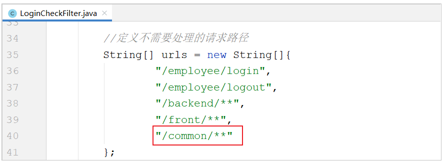
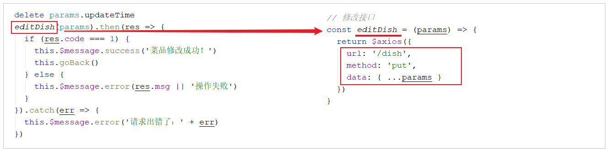

瑞吉外卖（四）
瑞吉外卖（四）
课程内容
- 文件上传下载
- 菜品新增
- 菜品分页查询
- 菜品修改
1. 文件上传下载
1.1 上传介绍
1.1.1 概述
文件上传，也称为upload，是指将本地图片、视频、音频等文件上传到服务器上，可以供其他用户浏览或下载的过程。文件上传在项目中应用非常广泛，我们经常发微博、发微信朋友圈都用到了文件上传功能。

文件上传时，对页面的form表单有如下要求：
| 表单属性 | 取值 | 说明 |
|---|---|---|
| method | post | 必须选择post方式提交 |
| enctype | multipart/form-data | 采用multipart格式上传文件 |
| type | file | 使用input的file控件上传 |
1.1.2 前端介绍
1). 简单html页面表单
<form method="post" action="/common/upload" enctype="multipart/form-data">
<input name="myFile" type="file" />
<input type="submit" value="提交" />
</form>2). ElementUI中提供的upload上传组件
目前一些前端组件库也提供了相应的上传组件，但是底层原理还是基于form表单的文件上传。

1.1.3 服务端介绍
服务端要接收客户端页面上传的文件，通常都会使用Apache的两个组件：
commons-fileupload
commons-io
而Spring框架在spring-web包中对文件上传进行了封装，大大简化了服务端代码，我们只需要在Controller的方法中声明一个MultipartFile类型的参数即可接收上传的文件，例如：
/**
* 文件上传
* @param file
* @return
*/
@PostMapping("/upload")
public R<String> upload(MultipartFile file){
System.out.println(file);
return R.success(fileName);
}1.2 下载介绍
文件下载，也称为download，是指将文件从服务器传输到本地计算机的过程。通过浏览器进行文件下载，通常有两种表现形式：
1). 以附件形式下载，弹出保存对话框，将文件保存到指定磁盘目录

2). 直接在浏览器中打开
而我们在今天所需要实现的菜品展示，表现形式为在浏览器中直接打开。

通过浏览器进行文件下载，本质上就是服务端将文件以流的形式写回浏览器的过程。
1.3 上传代码实现
1.3.1 前端代码
文件上传，我们作为服务端工程师，主要关注服务端代码实现。对于前端页面，可以使用ElementUI提供的上传组件。可以直接使用资料中提供的上传页面，位置：资料/文件上传下载页面/upload.html，将其拷贝到项目的目录(resources/backend/page/demo)下，启动项目，访问上传页面。
http://localhost:8080/backend/page/demo/upload.html

在上述的浏览器抓取的网络请求中，上传文件的调用url，在哪里配置的呢，这个时候，我们需要去看一下前端上传组件。

虽然上述是ElementUI封装的代码，但是实际上最终还通过file域上传文件，如果未指定上传文件的参数名，默认为file。

1.3.2 服务端实现
1). application.yml
需要在application.yml中定义文件存储路径
reggie:
path: D:\img\2). CommonController
编写文件上传的方法, 通过MultipartFile类型的参数即可接收上传的文件, 方法形参的名称需要与页面的file域的name属性一致。
所在包: com.itheima.reggie.controller
上传逻辑:
1). 获取文件的原始文件名, 通过原始文件名获取文件后缀
2). 通过UUID重新声明文件名, 文件名称重复造成文件覆盖
3). 创建文件存放目录
4). 将上传的临时文件转存到指定位置
代码实现:
import com.itheima.reggie.common.R;
import lombok.extern.slf4j.Slf4j;
import org.springframework.beans.factory.annotation.Value;
import org.springframework.web.bind.annotation.*;
import org.springframework.web.multipart.MultipartFile;
import java.io.File;
import java.util.UUID;
/**
* 文件上传和下载
*/
@RestController
@RequestMapping("/common")
@Slf4j
public class CommonController {
@Value("${reggie.path}")
private String basePath;
/**
* 文件上传
* @param file
* @return
*/
@PostMapping("/upload")
public R<String> upload(MultipartFile file){
//file是一个临时文件，需要转存到指定位置，否则本次请求完成后临时文件会删除
log.info(file.toString());
//原始文件名
String originalFilename = file.getOriginalFilename();//abc.jpg
String suffix = originalFilename.substring(originalFilename.lastIndexOf("."));
//使用UUID重新生成文件名，防止文件名称重复造成文件覆盖
String fileName = UUID.randomUUID().toString() + suffix;//dfsdfdfd.jpg
//创建一个目录对象
File dir = new File(basePath);
//判断当前目录是否存在
if(!dir.exists()){
//目录不存在，需要创建
dir.mkdirs();
}
try {
//将临时文件转存到指定位置
file.transferTo(new File(basePath + fileName));
} catch (IOException e) {
e.printStackTrace();
}
return R.success(fileName);
}
} 1.3.3 测试
代码编写完成之后，我们重新启动项目，访问上传页面 http://localhost:8080/backend/page/demo/upload.html，然后点击上传图片，选择图片上传时，会发现图片并不能正常的上传，而且在浏览器中可以抓取到响应的数据，从图中我们可以判断出需要登录才可以操作。

而这样的话，就要求我们在测试时，每一次都需要先登录，登录完成后在进行图片上传的测试，为了简化我们的测试，我们可以在 LoginCheckFilter 的doFilter方法中，在不需要处理的请求路径的数组中再加入请求路径 /common/** , 如下:
然后，我们在测试文件的上传功能时，就不需要登录就可以操作了。
我们在测试文件上传时，可以通过debug的形式来跟踪上传的整个过程，验证一下临时文件是否存在，以及上传完成之后，临时文件是否会自动删除。

1.4 下载代码实现
1.4.1 前端代码
文件下载，前端页面可以使用标签展示下载的图片。
<img v-if="imageUrl" :src="imageUrl" class="avatar"></img>那么，通过标签如何展示图片数据呢，接下来我们来解析一下具体的流程：

在文件上传成功后，在 handleAvatarSuccess 方法中获取文件上传成功之后返回的数据(文件名)，然后调用 /common/download?name=xxx 进行文件的下载。在这里，我们想让上传的照片能够在页面展示出来，所以我们就需要在服务端将文件以流的形式写回浏览器。
1.4.2 服务端代码
在 CommonController 中定义方法download，并接收页面传递的参数name，然后读取图片文件的数据，然后以流的形式写回浏览器。
具体逻辑如下：
1). 定义输入流，通过输入流读取文件内容
2). 通过response对象，获取到输出流
3). 通过response对象设置响应数据格式(image/jpeg)
4). 通过输入流读取文件数据，然后通过上述的输出流写回浏览器
5). 关闭资源
代码实现:
/**
* 文件下载
* @param name
* @param response
*/
@GetMapping("/download")
public void download(String name, HttpServletResponse response){
try {
//输入流，通过输入流读取文件内容
FileInputStream fileInputStream = new FileInputStream(new File(basePath + name));
//输出流，通过输出流将文件写回浏览器
ServletOutputStream outputStream = response.getOutputStream();
response.setContentType("image/jpeg");
int len = 0;
byte[] bytes = new byte[1024];
while ((len = fileInputStream.read(bytes)) != -1){
outputStream.write(bytes,0,len);
outputStream.flush();
}
//关闭资源
outputStream.close();
fileInputStream.close();
} catch (Exception e) {
e.printStackTrace();
}
}1.4.3 测试
访问页面 http://localhost:8080/backend/page/demo/upload.html , 点击上传图片 , 选择图片进行上传, 上传完毕之后, 查看图片是否可以展示出来。

通过F12查询页面发起的请求及响应的数据：

2. 菜品新增
2.1 需求分析
后台系统中可以管理菜品信息，通过 新增功能来添加一个新的菜品，在添加菜品时需要选择当前菜品所属的菜品分类，并且需要上传菜品图片，在移动端会按照菜品分类来展示对应的菜品信息 。

2.2 数据模型

新增菜品，其实就是将新增页面录入的菜品信息插入到dish表，如果添加了口味做法，还需要向dish_flavor表插入数据。所以在新增菜品时，涉及到两个表：
| 表结构 | 说明 |
|---|---|
| dish | 菜品表 |
| dish_flavor | 菜品口味表 |
1). 菜品表:dish

2). 菜品口味表:dish_flavor

2.3 准备工作
在开发业务功能前，先将需要用到的类和接口基本结构创建好：
1). 实体类 DishFlavor
直接从课程资料中导入即可，Dish实体前面课程中已经导入过了
所属包: com.itheima.reggie.entity
import com.baomidou.mybatisplus.annotation.FieldFill;
import com.baomidou.mybatisplus.annotation.TableField;
import lombok.Data;
import java.io.Serializable;
import java.time.LocalDateTime;
/**
菜品口味
*/
@Data
public class DishFlavor implements Serializable {
private static final long serialVersionUID = 1L;
private Long id;
//菜品id
private Long dishId;
//口味名称
private String name;
//口味数据list
private String value;
@TableField(fill = FieldFill.INSERT)
private LocalDateTime createTime;
@TableField(fill = FieldFill.INSERT_UPDATE)
private LocalDateTime updateTime;
@TableField(fill = FieldFill.INSERT)
private Long createUser;
@TableField(fill = FieldFill.INSERT_UPDATE)
private Long updateUser;
//是否删除
private Integer isDeleted;
}2). Mapper接口DishFlavorMapper
所属包: com.itheima.reggie.mapper
import com.baomidou.mybatisplus.core.mapper.BaseMapper;
import com.itheima.reggie.entity.DishFlavor;
import org.apache.ibatis.annotations.Mapper;
@Mapper
public interface DishFlavorMapper extends BaseMapper<DishFlavor> {
}3). 业务层接口 DishFlavorService
所属包: com.itheima.reggie.service
import com.baomidou.mybatisplus.extension.service.IService;
import com.itheima.reggie.entity.DishFlavor;
public interface DishFlavorService extends IService<DishFlavor> {
}4). 业务层实现类 DishFlavorServiceImpl
所属包: com.itheima.reggie.service.impl
import com.baomidou.mybatisplus.extension.service.impl.ServiceImpl;
import com.itheima.reggie.entity.DishFlavor;
import com.itheima.reggie.mapper.DishFlavorMapper;
import com.itheima.reggie.service.DishFlavorService;
import org.springframework.stereotype.Service;
@Service
public class DishFlavorServiceImpl extends ServiceImpl<DishFlavorMapper,DishFlavor> implements DishFlavorService {
}5). 控制层 DishController
菜品及菜品口味的相关操作，我们统一使用这一个controller即可。
所属包： com.itheima.reggie.controller
import com.itheima.reggie.service.DishFlavorService;
import com.itheima.reggie.service.DishService;
import lombok.extern.slf4j.Slf4j;
import org.springframework.beans.factory.annotation.Autowired;
import org.springframework.web.bind.annotation.*;
/**
* 菜品管理
*/
@RestController
@RequestMapping("/dish")
@Slf4j
public class DishController {
@Autowired
private DishService dishService;
@Autowired
private DishFlavorService dishFlavorService;
} 2.4 前端页面分析
基本的准备工作我们已经做完了，那么接下来我们就需要来实现新增菜品功能，在开发代码之前，需要梳理一下新增菜品时前端页面和服务端的交互过程。
1). 点击新建菜品按钮, 访问页面(backend/page/food/add.html), 页面加载时发送ajax请求，请求服务端获取菜品分类数据并展示到下拉框中

2). 页面发送请求进行图片上传，请求服务端将图片保存到服务器(上传功能已实现)
3). 页面发送请求进行图片下载，将上传的图片进行回显(下载功能已实现)

4). 点击保存按钮，发送ajax请求，将菜品相关数据以json形式提交到服务端
页面代码:

浏览器抓取请求:

开发新增菜品功能，其实就是在服务端编写代码去处理前端页面发送的这4次请求(上传、下载已实现)即可。经过上述的分析，我们还需要在服务端实现两块功能：
A. 菜品分类数据列表查询, 具体请求信息整理如下 :
| 请求 | 说明 |
|---|---|
| 请求方式 | GET |
| 请求路径 | /category/list |
| 请求参数 | ?type=1 |
B. 保存菜品信息, 具体请求信息整理如下 :
| 请求 | 说明 |
|---|---|
| 请求方式 | POST |
| 请求路径 | /dish |
| 请求参数 | json格式 |
下面呢,我们就需要根据这里分析的结果,分别来实现菜品分类列表的展示功能、保存菜品的功能 。
2.5 代码实现
2.5.1 菜品分类查询
在CategoryController中增加方法实现菜品分类查询，根据分类进行查询，并对查询的结果按照sort排序字段进行升序排序，如果sort相同，再按照修改时间倒序排序。
/**
* 根据条件查询分类数据
* @param category
* @return
*/
@GetMapping("/list")
public R<List<Category>> list(Category category){
//条件构造器
LambdaQueryWrapper<Category> queryWrapper = new LambdaQueryWrapper<>();
//添加条件
queryWrapper.eq(category.getType() != null,Category::getType,category.getType());
//添加排序条件
queryWrapper.orderByAsc(Category::getSort).orderByDesc(Category::getUpdateTime);
List<Category> list = categoryService.list(queryWrapper);
return R.success(list);
}代码编写完毕之后，我们可以打开新增菜品页面，查看响应的数据，及页面下拉列表的渲染情况：

2.5.2 保存菜品信息
在上述的分析中，我们可以看到在保存菜品时，页面传递过来的是json格式数据，格式如下：
{
"name":"佛跳墙",
"price":88800,
"code":"",
"image":"da9e1c70-fc32-4781-9510-a1c4ccd2ff59.jpg",
"description":"佛跳墙",
"status":1,
"categoryId":"1397844357980663809",
"flavors":[
{
"name":"辣度",
"value":"[\"不辣\",\"微辣\",\"中辣\",\"重辣\"]",
"showOption":false
},
{
"name":"忌口",
"value":"[\"不要葱\",\"不要蒜\",\"不要香菜\",\"不要辣\"]",
"showOption":false
}
]
}在服务端我们应该如何来封装前端传递的数据呢，我们发现，如果使用菜品类Dish来封装，只能封装菜品的基本属性，flavors属性是无法封装的。那么这个时候，我们应该如何处理呢?
这个时候，我们需要自定义一个实体类，然后继承自 Dish，并对Dish的属性进行拓展，增加 flavors 集合属性(内部封装DishFlavor)。清楚了这一点之后,接下来就进行功能开发。
1). 导入 DishDto 实体类
封装页面传递的请求参数。
所属包: com.itheima.reggie.dto
import com.itheima.reggie.entity.Dish;
import com.itheima.reggie.entity.DishFlavor;
import lombok.Data;
import java.util.ArrayList;
import java.util.List;
@Data
public class DishDto extends Dish {
private List<DishFlavor> flavors = new ArrayList<>();
private String categoryName;
private Integer copies;
}拓展： 我们在做项目时，经常会涉及到各种类型的实体模型。基本包含以下几种
| 实体模型 | 描述 |
|---|---|
| DTO | Data Transfer Object(数据传输对象)，一般用于展示层与服务层之间的数据传输。 |
| Entity | 最常用实体类，基本和数据表一一对应，一个实体类对应一张表。 |
| VO | Value Object(值对象), 主要用于封装前端页面展示的数据对象，用一个VO对象来封装整个页面展示所需要的对象数据 |
| PO | Persistant Object(持久层对象), 是ORM(Objevt Relational Mapping)框架中Entity，PO属性和数据库中表的字段形成一一对应关系 |
2). DishController定义方法新增菜品
在该Controller的方法中，不仅需要保存菜品的基本信息，还需要保存菜品的口味信息，需要操作两张表，所以我们需要在DishService接口中定义接口方法，在这个方法中需要保存上述的两部分数据。
/**
* 新增菜品
* @param dishDto
* @return
*/
@PostMapping
public R<String> save(@RequestBody DishDto dishDto){
log.info(dishDto.toString());
dishService.saveWithFlavor(dishDto);
return R.success("新增菜品成功");
}3). DishService中增加方法saveWithFlavor
//新增菜品，同时插入菜品对应的口味数据，需要操作两张表：dish、dish_flavor
public void saveWithFlavor(DishDto dishDto);4). DishServiceImpl中实现方法saveWithFlavor
页面传递的菜品口味信息，仅仅包含name 和 value属性，缺少一个非常重要的属性dishId， 所以在保存完菜品的基本信息后，我们需要获取到菜品ID，然后为菜品口味对象属性dishId赋值。
具体逻辑如下：
①. 保存菜品基本信息 ;
②. 获取保存的菜品ID ;
③. 获取菜品口味列表，遍历列表，为菜品口味对象属性dishId赋值;
④. 批量保存菜品口味列表;
代码实现如下:
@Autowired
private DishFlavorService dishFlavorService;
/**
* 新增菜品，同时保存对应的口味数据
* @param dishDto
*/
@Transactional
public void saveWithFlavor(DishDto dishDto) {
//保存菜品的基本信息到菜品表dish
this.save(dishDto);
Long dishId = dishDto.getId();//菜品id
//菜品口味
List<DishFlavor> flavors = dishDto.getFlavors();
flavors = flavors.stream().map((item) -> {
item.setDishId(dishId);
return item;
}).collect(Collectors.toList());
//保存菜品口味数据到菜品口味表dish_flavor
dishFlavorService.saveBatch(flavors);
}说明:
由于在 saveWithFlavor 方法中，进行了两次数据库的保存操作，操作了两张表，那么为了保证数据的一致性，我们需要在方法上加上注解 @Transactional来控制事务。
5). 在引导类上加注解 @EnableTransactionManagement
Service层方法上加的注解@Transactional要想生效，需要在引导类上加上注解 @EnableTransactionManagement， 开启对事务的支持。
@Slf4j
@SpringBootApplication
@ServletComponentScan
@EnableTransactionManagement //开启对事物管理的支持
public class ReggieApplication {
public static void main(String[] args) {
SpringApplication.run(ReggieApplication.class,args);
log.info("项目启动成功...");
}
}2.6 功能测试
代码编写完毕之后，我们重新启动服务，访问项目，然后登陆到系统中，进行菜品的新增测试，在测试时，我们可以通过debug断点跟踪的形式，查看我们传输的数据，及数据的封装。

debug跟踪数据的封装情况:

然后在测试完毕后, 我们可以检查一下数据库中的数据保存情况:

3. 菜品分页查询
3.1 需求分析
系统中的菜品数据很多的时候，如果在一个页面中全部展示出来会显得比较乱，不便于查看，所以一般的系统中都会以分页的方式来展示列表数据。

在菜品列表展示时，除了菜品的基本信息(名称、售价、售卖状态、更新时间)外，还有两个字段略微特殊，第一个是图片字段 ，我们从数据库查询出来的仅仅是图片的名字，图片要想在表格中回显展示出来，就需要下载这个图片。第二个是菜品分类，这里展示的是分类名称，而不是分类ID，此时我们就需要根据菜品的分类ID，去分类表中查询分类信息，然后在页面展示。
3.2 前端页面分析
在开发代码之前，需要梳理一下菜品分页查询时前端页面和服务端的交互过程：
1). 访问页面(backend/page/food/list.html)时，发送ajax请求，将分页查询参数(page、pageSize、name)提交到服务端，获取分页数据
2). 页面发送请求，请求服务端进行图片下载，用于页面图片展示


开发菜品信息分页查询功能，其实就是在服务端编写代码去处理前端页面发送的这2次请求即可，而前端发起的请求中， 图片文件下载回显的代码，我们已经实现了。所以，我们只需要开发分页查询的功能即可，分页查询具体的请求信息如下：
| 请求 | 说明 |
|---|---|
| 请求方式 | GET |
| 请求路径 | /dish/page |
| 请求参数 | ?page=1&pageSize=10&name=xxx |
3.3 代码实现
3.3.1 分析
上述我们已经分析了分页查询的请求信息，那么接下来，我们就需要在 DishController中开发方法，来完成菜品的条件分页查询，在分页查询时还需要给页面返回分类的名称，而分类的名称前端在接收的时候是通过 categoryName 属性获取的，那么对应的服务端也应该封装到 categoryName 属性中。
<el-table-column prop="categoryName" label="菜品分类"></el-table-column>而在我们的实体类 Dish 中，仅仅包含 categoryId， 不包含 categoryName，那么我们应该如何封装查询的数据呢？ 其实，这里我们可以返回DishDto对象，在该对象中我们可以拓展一个属性 categoryName，来封装菜品分类名称。
@Data
public class DishDto extends Dish {
private List<DishFlavor> flavors = new ArrayList<>();
private String categoryName; //菜品分类名称
private Integer copies;
}具体逻辑为：
1). 构造分页条件对象
2). 构建查询及排序条件
3). 执行分页条件查询
4). 遍历分页查询列表数据，根据分类ID查询分类信息，从而获取该菜品的分类名称
5). 封装数据并返回
3.3.2 实现
分析了具体的实现思路之后，接下来就来完成具体的代码实现。
/**
* 菜品信息分页查询
* @param page
* @param pageSize
* @param name
* @return
*/
@GetMapping("/page")
public R<Page> page(int page,int pageSize,String name){
//构造分页构造器对象
Page<Dish> pageInfo = new Page<>(page,pageSize);
Page<DishDto> dishDtoPage = new Page<>();
//条件构造器
LambdaQueryWrapper<Dish> queryWrapper = new LambdaQueryWrapper<>();
//添加过滤条件
queryWrapper.like(name != null,Dish::getName,name);
//添加排序条件
queryWrapper.orderByDesc(Dish::getUpdateTime);
//执行分页查询
dishService.page(pageInfo,queryWrapper);
//对象拷贝
BeanUtils.copyProperties(pageInfo,dishDtoPage,"records");
List<Dish> records = pageInfo.getRecords();
List<DishDto> list = records.stream().map((item) -> {
DishDto dishDto = new DishDto();
BeanUtils.copyProperties(item,dishDto);
Long categoryId = item.getCategoryId();//分类id
//根据id查询分类对象
Category category = categoryService.getById(categoryId);
if(category != null){
String categoryName = category.getName();
dishDto.setCategoryName(categoryName);
}
return dishDto;
}).collect(Collectors.toList());
dishDtoPage.setRecords(list);
return R.success(dishDtoPage);
}数据库查询菜品信息时，获取到的分页查询结果 Page 的泛型为 Dish，而我们最终需要给前端页面返回的类型为 DishDto，所以这个时候就要进行转换，基本属性我们可以直接通过属性拷贝的形式对Page中的属性进行复制，而对于结果列表 records属性，我们是需要进行特殊处理的(需要封装菜品分类名称);
3.4 功能测试
代码编写完毕之后，我们重新启动服务，访问项目，可以通过debug端点的形式跟踪，整个分页查询过程中，数据的转换和封装。
在测试的过程中，我们发现有一些菜品图片并没有展示出来，如下：

这是因为我们在导入sql脚本时，导入了一部分菜品的数据，而菜品的图片在我们的磁盘目录中并不存在，所以才会出现图片展示不出来的情况，而我们后续自己添加的菜品信息是没有问题的。
4. 菜品修改
4.1 需求分析
在菜品管理列表页面点击修改按钮，跳转到修改菜品页面，在修改页面回显菜品相关信息并进行修改，最后点击确定按钮完成修改操作。

4.2 前端页面分析
在开发代码之前，需要梳理一下修改菜品时前端页面（add.html）和服务端的交互过程：
1). 点击菜品列表的中的修改按钮，携带菜品id跳转至add.html

2). 进入add.html，页面发送ajax请求，请求服务端获取分类数据，用于菜品分类下拉框中数据展示(已实现)
3). add.html获取id, 发送ajax请求，请求服务端，根据id查询当前菜品信息，用于菜品信息回显

4). 页面发送请求，请求服务端进行图片下载，用于页图片回显(已实现)

5). 点击保存按钮，页面发送ajax请求，将修改后的菜品相关数据以json形式提交到服务端
经过上述的分析，我们发现，菜品分类下拉框的展示、图片的下载回显功能我们都已经实现了。我们只需要在这里实现两个功能即可，分别是：
1). 根据ID查询菜品及菜品口味信息
具体请求信息如下：
| 请求 | 说明 |
|---|---|
| 请求方式 | GET |
| 请求路径 | /dish/{id} |
2). 修改菜品及菜品口味信息
具体请求信息如下：
| 请求 | 说明 |
|---|---|
| 请求方式 | PUT |
| 请求路径 | /dish |
| 请求参数 | json格式数据 |
具体的json格式数据，我们可以通过浏览器抓取：
{
"id":"1422783914845487106",
"name":"佛跳墙",
"categoryId":"1397844357980663809",
"price":88800,
"code":"",
"image":"da9e1c70-fc32-4781-9510-a1c4ccd2ff59.jpg",
"description":"佛跳墙",
"status":1,
"sort":0,
"createTime":"2021-08-04 12:58:14",
"createUser":"1412578435737350122",
"updateUser":"1412578435737350122",
"flavors":[
{
"id":"1422783914883235842",
"dishId":"1422783914845487106",
"name":"辣度",
"value":"[\"不辣\",\"微辣\",\"中辣\",\"重辣\"]",
"createTime":"2021-08-04 12:58:14",
"updateTime":"2021-08-04 12:58:14",
"createUser":"1412578435737350122",
"updateUser":"1412578435737350122",
"isDeleted":0,
"showOption":false
},
{
"id":"1422783914895818754",
"dishId":"1422783914845487106",
"name":"忌口",
"value":"[\"不要葱\",\"不要蒜\",\"不要香菜\",\"不要辣\"]",
"createTime":"2021-08-04 12:58:14",
"updateTime":"2021-08-04 12:58:14",
"createUser":"1412578435737350122",
"updateUser":"1412578435737350122",
"isDeleted":0,
"showOption":false
}
]
}4.3 功能实现
4.3.1 根据ID查询菜品信息
4.3.1.1 代码实现
页面发送ajax请求，请求服务端，根据id查询当前菜品信息和对应的口味信息，用于修改页面中菜品信息回显。
1). 在DishService接口中扩展getByIdWithFlavor方法
//根据id查询菜品信息和对应的口味信息
public DishDto getByIdWithFlavor(Long id);2). 在DishService实现类中实现此方法
具体逻辑为:
A. 根据ID查询菜品的基本信息
B. 根据菜品的ID查询菜品口味列表数据
C. 组装数据并返回
代码实现:
/**
* 根据id查询菜品信息和对应的口味信息
* @param id
* @return
*/
public DishDto getByIdWithFlavor(Long id) {
//查询菜品基本信息，从dish表查询
Dish dish = this.getById(id);
DishDto dishDto = new DishDto();
BeanUtils.copyProperties(dish,dishDto);
//查询当前菜品对应的口味信息，从dish_flavor表查询
LambdaQueryWrapper<DishFlavor> queryWrapper = new LambdaQueryWrapper<>();
queryWrapper.eq(DishFlavor::getDishId,dish.getId());
List<DishFlavor> flavors = dishFlavorService.list(queryWrapper);
dishDto.setFlavors(flavors);
return dishDto;
}3). 在DishController中创建get方法
/**
* 根据id查询菜品信息和对应的口味信息
* @param id
* @return
*/
@GetMapping("/{id}")
public R<DishDto> get(@PathVariable Long id){
DishDto dishDto = dishService.getByIdWithFlavor(id);
return R.success(dishDto);
}
@PathVariable : 该注解可以用来提取url路径中传递的请求参数。
4.3.1.2 功能测试
编写完代码后，重启服务进行测试，点击列表的修改按钮，查询数据回显情况。

4.3.2 修改菜品信息
4.3.2.1 代码实现
点击保存按钮，页面发送ajax请求，将修改后的菜品相关数据以json形式提交到服务端。在修改菜品信息时需要注意，除了要更新dish菜品表，还需要更新dish_flavor菜品口味表。
1). 在DishService接口中扩展方法updateWithFlavor
//更新菜品信息，同时更新对应的口味信息
public void updateWithFlavor(DishDto dishDto);2). 在DishServiceImpl中实现方法updateWithFlavor
在该方法中，我们既需要更新dish菜品基本信息表，还需要更新dish_flavor菜品口味表。而页面再操作时，关于菜品的口味，有修改，有新增，也有可能删除，我们应该如何更新菜品口味信息呢，其实，无论菜品口味信息如何变化，我们只需要保持一个原则： 先删除，后添加。
@Override
@Transactional
public void updateWithFlavor(DishDto dishDto) {
//更新dish表基本信息
this.updateById(dishDto);
//清理当前菜品对应口味数据---dish_flavor表的delete操作
LambdaQueryWrapper<DishFlavor> queryWrapper = new LambdaQueryWrapper();
queryWrapper.eq(DishFlavor::getDishId,dishDto.getId());
dishFlavorService.remove(queryWrapper);
//添加当前提交过来的口味数据---dish_flavor表的insert操作
List<DishFlavor> flavors = dishDto.getFlavors();
flavors = flavors.stream().map((item) -> {
item.setDishId(dishDto.getId());
return item;
}).collect(Collectors.toList());
dishFlavorService.saveBatch(flavors);
}3). 在DishController中创建update方法
/**
* 修改菜品
* @param dishDto
* @return
*/
@PutMapping
public R<String> update(@RequestBody DishDto dishDto){
log.info(dishDto.toString());
dishService.updateWithFlavor(dishDto);
return R.success("修改菜品成功");
}4.3.2.2 功能测试
代码编写完成之后，重启服务，然后按照前面分析的操作流程进行测试，查看数据是否正常修改即可。
 wechat
wechat alipay
alipay